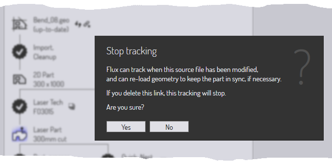

Ροή εργασιών τεμαχίου
Επειδή το TecZone Bend διαθέτει πολλές ενσωματωμένες μονάδες, υπάρχουν συχνά πολλαπλές διαδρομές στις οποίες μπορούν να μετακινούνται δεδομένα.
Παράδειγμα 1: όταν φορτώνετε δεδομένα επίπεδου τεμαχίου (από αρχείο GEO ή αρχείο DXF), μπορείτε να επιλέξετε να
-
αντιστοιχίστε τον εξοπλισμό λέιζερ με το τεμάχιο, ώστε αυτό να μπορεί να τοποθετηθεί σε μια μεταλλική πλάκα και να κοπεί μαζί με άλλα τεμάχια.
-
διπλώσετε το τεμάχιο κατά μήκος των γραμμών δίπλωσης σε ένα τεμάχιο 3D έτσι ώστε να μπορεί να υποβληθεί σε επεξεργασία και να υπολογιστεί μια αλληλουχία κάμψης για μια καμπτική πρέσα.
Παράδειγμα 2: όταν εισάγετε ένα μοντέλο επιφάνειας 3-D (από αρχείο IGES ή STEP), μπορείτε να επιλέξετε να
-
αναλύστε τις επιφάνειες και τοποθετήστε εργαλεία λέιζερ 5 αξόνων κατά μήκος οπών που πρέπει να κοπούν.
-
διεξάγετε αναγνώριση χαρακτηριστικών, νε μετατρέψετε το μοντέλο επιφάνειας σε μοντέλο μεταλλικής πλάκας και να το ξεδιπλώσετε σε ένα επίπεδο μοτίβο για τη διάτρηση με πρέσα στιγέα.
Ο πίνακας ροής εργασιών

Ο Ροή εργασιών πίνακας είναι σαν ένας κεντρικός κόμβος από όπου μπορείτε να κατευθύνετε όλες αυτές τις κινήσεις. Όταν έχετε ένα τεμάχιο ανοικτό, μπορείτε πάντοτε να εμφανίσετε τη ροή εργασιών πατώντας απλώς W ή κάνοντας κλικ το εικονίδιο της ροής εργασιών στη γραμμή εντολών στα αριστερά. Ας εξερευνήσουμε τον πίνακα ροής εργασιών. Ξεκινήστε με εισαγωγή ενός τεμαχίου 2D με πληροφορίες κάμψης (ένα αρχείο GEO, για παράδειγμα). Εμφανίζοντας τον πίνακα ροής εργασιών στο σημείο αυτό προβάλλετε τα εξής:
-
Ξεκινήσαμε με το αρχείο Bend_28.geo, που έχει εισαχθεί και εκκαθαριστεί για τη δημιουργία ενός τεμαχίου μεταλλικής πλάκας 2D (προβάλλονται οι διαστάσεις του τεμαχίου)
-
Τότε υπάρχει ένας κλάδος στη ροή εργασιών.
-
Θα μπορούσαμε να εκχωρήσουμε τεχνολογία λέιζερ στο τεμάχιο (αυτό συνεπάγεται απλώς την εκχώρηση διαδρομών κοπής λέιζερ στα περιγράμματα του τεμαχίου).
-
Θα μπορούσαμε να διπλώσουμε το επίπεδο τεμάχιο σε 3D (ανιχνεύονται 9 κάμψεις).
-
Επέκταση κόμβων ροής εργασιών: Στάδιο 1
Κάνετε κλικ στο εικονίδιο Laser Tech (Τεχνολογία λέιζερ) για να αντιστοιχίσετε εξοπλισμό λέιζερ με το τεμάχιο. Θα δείτε το τεμάχιο να αναλύεται άμεσα και να προστίθεται εξοπλισμός λέιζερ σε αυτό. Στη συνέχεια, κάνετε κλικ στο εικονίδιο Δίπλωση σε 3D για να διπλώσετε το επίπεδο τεμάχιο σε 3D. Ύστερα από αυτά τα βήματα, έτσι εμφανίζεται ο πίνακας ροής εργασιών:

Όπως σηματοδοτούν τα σχόλια, υπάρχουν διάφοροι τύποι κόμβων στο διάγραμμα ροής εργασιών.
-
Υπάρχουν κόμβοι Προβολής τεμαχίου που αντιπροσωπεύουν τους διάφορους τύπους επεξεργασίας που θα μπορούσατε να χρησιμοποιήσετε στο τεμάχιο. Κάνοντας κλικ σε αυτούς τους κόμβους, το τεμάχιο μεταβαίνει σε εκείνη την προβολή και το σύνολο των διαδικασιών που είναι διαθέσιμες στο τεμάχιο είναι αντιπροσωπευτικό για εκείνη την προβολή. Για παράδειγμα, στην προβολή Τεμάχιο λέιζερ μπορείτε να προβάλλετε και να επεξεργαστείτε τον εξοπλισμό λέιζερ που έχει εκχωρηθεί στο τεμάχιο.
-
Μπορείτε να εναλλάσσεστε μεταξύ αυτών των προβολών κάνοντας κλικ σε αυτά τα εικονίδια. Όλες αυτές οι διάφορες προβολές τεμαχίου διαθέτουν επίσης πλήκτρα συντόμευσης, τα οποία μπορείτε να προβάλλετε στρέφοντας απλώς το ποντίκι σε ένα από τα εικονίδια προβολής. Μάθετε γρήγορα αυτά τα πλήκτρα συντόμευσης για να πλοηγήστε στη ροή εργασιών. Συνεπώς, ύστερα από λίγο, θα χρησιμοποιείτε αλληλουχίες πλήκτρων όπως W B Esc για να ανοίξετε τον πίνακα ροής εργασιών, νε μεταβείτε στην προβολή τεμαχίου προς κάμψη και μετά να κλείνετε τον πίνακα ροής εργασιών.
-
Τα δεδομένα του τεμαχίου προωθούνται μεταξύ αυτών των κόμβων από διάφορες διαδικασίες και αυτές οι διαδικασίες αντιπροσωπεύονται στον πίνακα ροής εργασιών με χρήση εικονιδίων αστέρα 13 ακτίνων. Για παράδειγμα, μεταβαίνετε από την προβολή τεμαχίου 2D στην προβολή τεμαχίου λέιζερ με τη διαδικασία τεχνολογίας λέιζερ (που αναλύει το τεμάχιο 2D και εκχωρεί εξοπλισμό λέιζερ σε αυτό).
Για τις διαδικασίες που έχετε ολοκληρώσει προβάλλεται ένα σύμβολο επιλογής εντός τους. Για τις διαδικασίες που δεν έχετε ολοκληρώσει ακόμη (αλλά είναι διαθέσιμες) προβάλλεται ένας σύμβολο σταυρού εντός τους. Μπορείτε να κάνετε κλικ σε αυτούς τους κόμβους επεξεργασίας για να ολοκληρώσετε το διαδικασία.
Ας συνοψίσουμε τι μπορούμε να δούμε σε αυτό το στάδιο της ροής εργασιών του τεμαχίου μας:
-
Υπάρχουν τώρα διαθέσιμες 3 προβολές τεμαχίου (το Τεμάχιο 2D, το Τεμάχιο λέιζερ και το Μοντέλο 3D μεταξύ των οποίων μπορείτε να εναλλάσσεστε).
-
Υπάρχουν άλλες τέσσερις διαθέσιμες διαδικασίες:
-
Θα μπορούσατε να υποβάλλετε σε συμπληρωματική επεξεργασία επίπεδου τεμαχίου (έτσι δημιουργείται μια αναφορά επίπεδου τεμαχίου που θα μπορούσες να είναι χρήσιμη για ένα χειριστή λέιζερ ή πρέσας στιγέα και θα περιλάμβανε συνήθως χρόνους κοπής με λέιζερ, ρυθμίσεις εξοπλισμού για πρέσες στιγέα και άλλες απαιτήσεις ειδικού εξοπλισμού για το συγκεκριμένο τεμάχιο).
-
Θα μπορούσαμε να εκτελέσουμε μια γρήγορη κατανομή (η γρήγορη κατανομή είναι μια κατανομή που περιλαμβάνει μόνο έναν τύπο τεμαχίου) και να δημιουργήσουμε μια πλήρη μεταλλική πλάκα που περιλαμβάνει αυτό το τεμάχιο. Αυτό θα μπορούσε να χρησιμοποιηθεί για την παραγωγή μιας πλήρους μεταλλικής πλάκας μόνο με αυτό το τεμάχιο ή για βοήθεια για την κατάρτιση μιας γρήγορης εκτίμησης κόστους ή χρόνου για το συγκεκριμένο τεμάχιο.
-
Θα μπορούσαμε να εκχωρήσουμε τεχνολογία κάμψης (εξοπλισμός καμπτικής πρέσας) για το τεμάχιο.
-
Θα μπορούσαμε να εκχωρήσουμε τεχνολογία συγκόλλησης (εξοπλισμός ρομπότ συγκόλλησης) για το τεμάχιο.
-
Επέκταση κόμβων ροής εργασιών: Στάδιο 2
Ας προχωρήσουμε παρακάτω: Κάνετε κλικ σε όλους τους διαθέσιμους κόμβους επεξεργασίας διαδοχικά και δείτε πώς επεκτείνεται ο πίνακας ροής εργασιών. Συνεχίστε μέχρι να μην απομένουν άλλοι κόμβοι. Εδώ παρατίθεται πώς θα ήταν η κατάσταση ύστερα από αυτές τις διαδικασίες:

Σε αυτήν την εντελώς εκτεταμένη κατάσταση, ο πίνακας ροής εργασιών σάς διευκολύνει να εναλλάσσεστε άμεσα μεταξύ έξι διαφορετικών προβολών του τεμαχίου σε διάφορες μονάδες επεξεργασίας. Μπορείτε επίσης να προβάλετε και να μεταδώσετε ή να εκτυπώσετε όλα τα διάφορα αποτελέσματα που παράγονται από αυτές τις μονάδες. (Τα αποτελέσματα θα μπορούσαν να είναι αναφορές, κώδικας NC ή χρονικές μελέτες).
Πλοήγηση στον πίνακα ροής εργασιών
Ο πίνακας ροής εργασιών αντιπροσωπεύει πολλές πληροφορίες και διαδικασίες σε συμπαγή γραφική μορφή. Τις περισσότερες φορές, αυτός λειτουργεί ως κεντρικός κόμβος καθώς εργάζεστε με τεμάχια. Ας ρίξουμε μια πιο προσεκτική ματιά σε μερικά από τα εικονίδια στον πίνακα ροής εργασιών για να κατανοήσουμε πώς μπορούν να χρησιμοποιηθούν.
Διαθέσιμοι κόμβοι επεξεργασίας
Ένας αστέρας 13 ακτίνων με + στο εσωτερικό του αντιπροσωπεύει ένα βήμα επεξεργασίας που είναι τώρα διαθέσιμο. Για παράδειγμα, θα μπορούσε να είναι η δίπλωση ενός επίπεδου τεμαχίου 2D σε ένα τεμάχιο 3D ή εκχώρηση εξοπλισμού τεχνολογίας λέιζερ. Τοποθετήστε το δείκτη του ποντικιού επάνω έναν τέτοιο κόμβο για να εμφανίσει μια συμβουλή εργαλείου που εξηγεί τι θα κάνει ο κόμβος.

Αυτό ακολουθεί ένα χαρακτηριστικό μοτίβο για πολλούς διαθέσιμους κόμβους επεξεργασίας. Κάνοντας κλικ στον κόμβο εκτελείται η διαδικασία με τις προεπιλεγμένες ρυθμίσεις. Ένα Ctrl+Click στον κόμβο εμφανίζει πρώτα μια σελίδα ρυθμίσεων και αφού εξετάσετε/επεξεργαστείτε τις ρυθμίσεις, εκτελείται η επεξεργασία. Για παράδειγμα, εδώ είναι αυτό εμφανίζεται όταν κάνετε Ctrl+Click στον κόμβο Γρήγορη κατανομή:

Εμφανίζονται οι ρυθμίσεις γρήγορης κατανομής, ώστε να μπορείτε να τις επεξεργαστείτε προτού εκτελέστε την κατανομή.
Ολοκληρωμένοι κόμβοι επεξεργασίας
Μόλις ολοκληρωθεί μια διαδικασία, ο κόμβος αλλάζει από διαθέσιμο κόμβο επεξεργασίας σε ολοκληρωμένο κόμβο επεξεργασίας. Το σύμβολο μεταβάλλεται σε αστέρα με ένα σύμβολο επιλογής μέσα του. Σε αυτό το σημείο, οι διαθέσιμες επιλογές για αυτόν τον κόμβο αλλάζουν.

Αυτό είναι ένα χαρακτηριστικό σύνολο επιλογών που είναι διαθέσιμες σε έναν ολοκληρωμένο κόμβο επεξεργασίας. Με κλικ, ο κόμβος εμφανίζει ξανά τις ρυθμίσεις της διαδικασίας, ώστε να μπορείτε να τις τροποποιήσετε και δοκιμάστε ξανά την επεξεργασία. Μια επιλογή Ctrl+Click είναι επίσης συνήθως διαθέσιμη για τη διαγραφή των δεδομένων της διαδικασίας. Εάν επιλέξετε αυτήν την επιλογή, θα σας ζητηθεί επιβεβαίωση πριν από την πραγματοποίηση της διαγραφής. Για παράδειγμα, δείτε τι συμβαίνει όταν κάνετε Ctrl+Click στον κόμβο του μοντέλου 3D για ένα πλήρως επεξεργασμένο τεμάχιο:

Βοηθητικές εντολές
Πολλοί κόμβοι διαθέτουν μικρά εικονίδια κοντά τους, τα οποία παρέχουν βοηθητικές εντολές. Αυτές οι εντολές παρέχουν ορισμένες λειτουργίες που σχετίζονται με αυτόν τον κόμβο. Εδώ είναι μερικά παραδείγματα.
-
Τα βοηθητικά εικονίδια κοντά σε κάθε κόμβο τεχνολογίας σας παρέχουν συνήθως τη δυνατότητα να επιλέξετε ένα διαφορετικό μηχάνημα και εξοπλισμό για αυτό το μηχάνημα.

-
Το εικονίδιο κοντά στον κόμβο Γρήγορη κατανομή παρέχει τη δυνατότητα κατανομής σε διαφορετικό μέγεθος μεταλλικής πλάκας.
-
Τα εικονίδια κοντά στους κόμβους αποτελεσμάτων σάς παρέχουν τη δυνατότητα να προβάλλετε τα διάφορα αποτελέσματα από έναν κόμβο επεξεργασίας (αναφορές, προγράμματα NC ή χρονικές μελέτες).

Παρακολούθηση αρχείου πηγής

Οι περισσότερες επεξεργασίες στο TecZone Bend αρχίζουν με την εισαγωγή δεδομένων CAD (είτε 2-D είτε 3-D). Τα τεμάχια TecZone Bend που κατασκευάζονται από αυτά τα δεδομένα CAD μπορούν να εξακολουθήσουν να παρακολουθούν αυτά τα τεμάχια προέλευσης. Όταν ανοίγει ένα τεμάχιο, το TecZone Bend μπορεί να ελέγξει αν το αρχικό αρχείο CAD από το οποίο δημιουργήθηκε έχει τροποποιηθεί στο μεταξύ. Εάν έχει τροποποιηθεί, το τεμάχιο είναι πλέον παρωχημένο και αυτό μπορεί να φανεί στον πίνακα ροής εργασιών.
-
Μπορείτε να επιλέξετε να ανανεώσετε το τεμάχιο κάνοντας κλικ στο βοηθητικό εικονίδιο ανανέωσης τεμαχίου κοντά στον κόμβο πηγής του τεμαχίου. Το TecZone Bend θα εισαγάγει εκ νέου τη γεωμετρία CAD και να ανακατασκευάσει το τεμάχιο.
-
Μπορείτε επίσης να επιλέξετε να διακόψετε την παρακολούθηση της αρχικής γεωμετρίας CAD. Αυτό μπορεί να είναι χρήσιμο, για παράδειγμα, εάν το αρχικό αρχείο CAD υπάρχει σε αφαιρούμενο μέσο ή σε απομακρυσμένη μονάδα δίσκου που ενδέχεται να μην είναι προσβάσιμη στο μέλλον. Για το σκοπό αυτό κάνετε κλικ στο βοηθητικό εικονίδιο κατάργησης συνδέσμου κοντά στον κόμβο πηγής του τεμαχίου. Έτσι εμφανίζεται μια προτροπή για τη διακοπή της παρακολούθησης του αρχείου πηγής:

Σύνοψη
Ακολουθεί μια σύντομη σύνοψη των βασικών αρχών στον πίνακα ροής εργασιών.
-
Ο πίνακας ροής εργασιών εμφανίζει κόμβους που αντιπροσωπεύουν διάφορες προβολές τεμαχίων (όπως τεμάχιο λέιζερ, τεμάχιο κάμψης) και κόμβους που αντιπροσωπεύουν διάφορες διαδικασίες (όπως δίπλωση σε 3D, εκχώρηση εξοπλισμού λέιζερ).
-
Οι κόμβοι επεξεργασίας που είναι διαθέσιμοι (δεν έχουν ακόμη εκτελεστεί) αναπαρίστανται ως αστέρες 13 ακτίνων με το σήμα μέσα τους. Οι κόμβοι επεξεργασίας που έχουν ήδη ολοκληρωθεί, αντιπροσωπεύονται από αστέρες με μια σήμανση μέσα τους.
-
Κάνοντας κλικ σε έναν διαθέσιμο κόμβο επεξεργασίας, αυτή η επεξεργασία ενεργοποιείται με τις προεπιλεγμένες ρυθμίσεις. Το Ctrl+Click σε διαθέσιμους κόμβους επεξεργασίας εμφανίζεται έναν επεξεργαστή για την επεξεργασία των ρυθμίσεων επεξεργασίας και μετά δρομολογεί την επεξεργασία.
-
Κάνοντας κλικ σε έναν ολοκληρωμένο κόμβο επεξεργασίας μπορείτε να τροποποιήσετε τις ρυθμίσεις της επεξεργασίας και την εφαρμόστε ξανά. Το Ctrl+Click σε έναν ολοκληρωμένο κόμβο επεξεργασίας καταργεί τα δεδομένα επεξεργασίας.
-
Τα μικρά βοηθητικά εικονίδια κοντά σε έναν κόμβο επεξεργασίας ή σε έναν κόμβο προβολής τεμαχίου παρέχουν τη δυνατότητα ελέγχου για την αλλαγή κάποιας σημαντικής παραμέτρου αυτού του κόμβου επεξεργασίας (όπως το μηχάνημα στόχος ή το μέγεθος της μεταλλικής πλάκας κατανομής).